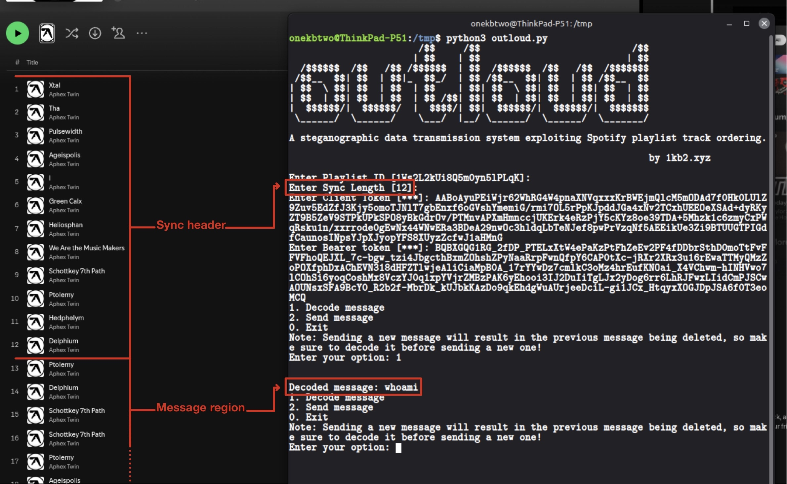
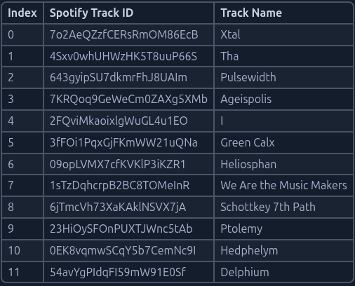

OutLoud: One Loud Covert Channel
Exploring steganography through a covert channel built on Spotify playlist track ordering.
1.0 Abstract
1.1 Overview
Outloud is a Proof-of-Concept (PoC) covert channel that encodes arbitrary text messages into the ordering of tracks within a public Spotify playlist.
By leveraging the fact that Spotify embeds all playlist track URIs in publicly
accessible HTML meta tags, a receiver requires no authentication whatsoever to
decode messages. The sender encodes data using a base-N positional encoding scheme where the first N tracks define a dynamic codebook, and subsequent tracks represent encoded characters.
The shared secret between sender and receiver is a single integer, the sync length,
which determines both the codebook and the encoding base.
This paper documents the technical design, implementation, API reverse engineering findings, and detection considerations for this channel.
Follow this and additional works at: https://1kb2.xyz
1.2 What is a Covert Channel?
Covert channels [1] enable secret data transmission through legitimate system resources or protocols, evading detection by hiding communication within normal operations. They fall into: * Timing channels [2], like inter-packet delays. * Storage channels [3], like modifying packet headers or in our case leveraging Spotify playlist track ordering.
1.3 Why Spotify?
Spotify presents a uniquely attractive platform for covert channel implementation for several reasons. With over 761 million users [4], playlist activity is considered entirely normal behavior that generates no suspicion. Unlike email or messaging platforms, playlist modifications leave no obvious communication trail between two parties.
More critically, Spotify exposes all playlist track URIs in publicly accessible HTML meta tags:
<SNIP>
<meta name="music:song" content="https://open.spotify.com/track/7o2AeQZzfCERsRmOM86EcB"/>
<meta name="music:song:track" content="1"/>
<meta name="music:song" content="https://open.spotify.com/track/4Sxv0whUHWzHK5T8uuP66S"/>
<meta name="music:song:track" content="2"/>
<SNIP>
intended for search engine indexing and social media link previews. This means a receiver can decode messages using nothing more than an HTTP request to a public playlist URL, no account, no API key, no authentication of any kind, for public playlists only.
Finally, Spotify's internal GraphQL API accepts write operations such as adding and removing tracks using session tokens extractable from any logged-in browser session, requiring no registered developer account or official API access.
2.0 Background
Steganography is the practice of concealing information within ordinary, non-secret data so that the existence of a message goes undetected [5].
While steganographic techniques have existed for centuries, the field only developed a formal theoretical foundation in the early 1990s with the rise of digital media and networked communication [5].
2.1 Steganography theory
Unlike cryptography, which protects the content of a message, steganography protects the fact that communication is occurring at all.
Steganography is sometimes conflated with security through obscurity, the flawed principle that a system is secure simply because its inner workings are hidden.
As Bruce Schneier noted:
"Security through obscurity is no security at all." [6]
This distinction is critical for Outloud. The channel itself provides no confidentiality, if an adversary discovers the playlist and knows the sync length, they can decode any message trivially. For operational security, plaintext messages should be encrypted before encoding into the playlist. Outloud provides covertness, not confidentiality, these properties should not be conflated.
2.2 Existing covert channels
Covert channels are classified into two fundamental categories: storage channels, which encode information in a persistent readable medium, and timing channels, which encode information in the timing of events [2].
Implementations vary widely. Common examples include:
Network protocol channels leverage the structure of network protocols to hide data. During the SolarWinds compromise (attributed to APT29/SVR), attackers used DNS subdomain encoding to construct randomized subdomains for C2 communication [7]. Similarly, the Ke3chang/APT15 group's Okrum backdoor employed custom HTTP header steganography using Cookie and Set-Cookie fields for C2 [8].
Media steganography hides data within innocent-looking files. - LSB image embedding conceals data in the least significant bits of pixel values in PNG and JPEG files [9]. - Echo audio steganography embeds data into audio signals by varying the amplitude, decay rate, and offset of introduced echoes [10].
Web service abuse [11] stores malicious payloads directly on legitimate platforms such as Dropbox, GitHub, or Pastebin. While these blend into normal traffic due to the legitimacy of the hosting platform, the payload itself remains detectable through content inspection.
Outloud differs fundamentally from all of the above, no malicious content is stored anywhere. The message exists only in the semantic ordering of tracks within a normal music playlist, invisible to any content-based detection.
2.3 Why social platforms are interesting targets
Social platforms are particularly interesting targets for covert channel implementation due to the sheer volume of traffic they generate. Connections to platforms like Spotify, Twitter, or Instagram blend seamlessly into baseline network noise, making individual requests statistically invisible to most monitoring tools unless it is excessive.
Outloud specifically leverages Spotify because the encoded data is functionally benign at rest (e.g. a playlist of Aphex Twin tracks raises no suspicion to any observer, human or automated, nor does it cause any harm to the platform or its users). The data only becomes meaningful when decoded with knowledge of the sync length, meaning content inspection alone is insufficient to detect the channel.
Unlike attacker-controlled C2 infrastructure, social platforms cannot be blocklisted without significant operational justification. An employee listening to music on Spotify while working is entirely expected behavior.
3.0 Technical Design
3.1 The Sync Header Concept
Outloud encodes messages into the ordering of tracks within a Spotify playlist. The playlist is divided into two regions:
- Sync header: the first N tracks, where N is the
SYNC_LENGTH. These tracks define the codebook dynamically, their position in the playlist determines their symbol value. Track at position 1 = symbol 0, position 2 = symbol 1, and so on. - Message region: all tracks after position N. These tracks encode the actual message using the codebook defined by the sync header.
The sync header serves two purposes. First it establishes the encoding alphabet without any hardcoded values, the codebook is derived entirely from the current state of the playlist. Second, reordering the sync header tracks produces a completely different codebook, effectively changing the encoding key without modifying any software.
Below is an example playlist with SYNC_LENGTH = 12, and the resulting codebook generated from its sync header:

Figure 1: Playlist viewed in Spotify — first 12 tracks form the sync header, subsequent tracks encode the message.

Figure 2: Codebook generated from sync header of playlist
1Ws2L2kUi8Q5m0yn5lPLqK with SYNC_LENGTH = 12
3.2 Base-12 encoding
The encoding base is determined directly by the SYNC_LENGTH , the number of tracks in the sync header. With SYNC_LENGTH = 12, Outloud operates in base-12 by default.
The number of tracks required to represent a single ASCII character (values 0–127) is calculated as:
tracks_per_char = ⌈log_N(128)⌉
Where N is the base (equal to sync length) and 128 is the size of the ASCII character space.
Why base-12?
Base-12 is the smallest base that achieves full ASCII coverage in exactly 2 tracks per character:
11² = 121 < 128 ✗ needs 3 tracks per character
12² = 144 ≥ 128 ✓ needs 2 tracks per character
This makes 12 the optimal choice, it minimizes the sync header size while keeping the encoding at 2 tracks per character.
Example: encoding the letter w (ASCII 119) in base-12:
Encoding:
119 ÷ 12 = 9 remainder 11
digits = [9, 11]
symbol 9 → Ptolemy (23HiOySFOnPUXTJWnc5tAb)
symbol 11 → Delphium (54avYgPIdqFI59mW91E0Sf)
The letter w is encoded by appending Ptolemy followed by Delphium to the playlist after the sync header.
Decoding:
Read track → Ptolemy → symbol 9
Read track → Delphium → symbol 11
value = (9 × 12) + 11 = 119
chr(119) = 'w' ✓
This is the first character of the message whoami currently encoded in the example playlist.
See Figure 1 above.
Comparison across different bases:
| SYNC_LENGTH | Tracks per char | 5-char message | Max capacity* |
|---|---|---|---|
| 4 | 4 | 20 tracks | ~2,499 chars |
| 8 | 3 | 15 tracks | ~3,330 chars |
| 12 | 2 | 10 tracks | ~4,994 chars |
| 16 | 2 | 10 tracks | ~4,992 chars |
| 32 | 2 | 10 tracks | ~4,984 chars |
| 64 | 2 | 10 tracks | ~4,968 chars |
| 128 | 1 | 5 tracks | ~9,872 chars |
*Based on Spotify's 10,000 track playlist limit, minus sync header tracks. [12]
Limitations:
- ASCII only: the current implementation supports standard ASCII (0–127). Extended character sets such as UTF-8 would require either a larger base or more tracks per character.
- Playlist size cap: Spotify limits playlists to 10,000 tracks [12], giving a theoretical maximum message length of ~4,994 characters at base-12.
Note: In the current PoC, all sync header tracks are sourced from a single album (Aphex Twin — Selected Ambient Works 85-92) for simplicity. In an operational deployment, tracks would be sourced from multiple artists and genres to better resemble a genuine user-curated playlist.
3.3 SYNC_LENGTH as shared secret
The only value both sender and receiver must agree on in advance is the SYNC_LENGTH , a single integer that determines where the sync header ends and the message region begins.
Without knowledge of the sync length, an observer cannot:
- Determine which tracks form the codebook and which encode the message
- Derive the encoding base
- Calculate how many tracks represent a single character
This makes the sync length function as a lightweight shared secret. While it does not provide cryptographic security, it introduces a layer of ambiguity, an interceptor who discovers the playlist must still guess or brute-force the correct sync length to decode anything meaningful.
Keyspace analysis:
For a playlist of T total tracks, an interceptor must try every possible SYNC_LENGTH from 2 to T-1. Most incorrect values will either produce decoding errors, where message tracks are not found in the codebook, or nonsensical output, making manual verification necessary for each attempt.
Additionally, the ordering of tracks within the sync header itself acts as a secondary key. With SYNC_LENGTH = 12, there are:
12! = 479,001,600 possible codebook permutations
Note: Reordering the same 12 tracks in the sync header produces a completely different codebook without changing the track selection, effectively rekeying the channel by simply rearranging the playlist.
4.0 Implementation
4.1 Receiver: Zero-Auth HTML Meta Tag Scraping
The receiver requires no authentication whatsoever. Public Spotify playlist pages embed all track URIs in HTML meta tags using the Open Graph music protocol. A simple HTTP GET request retrieves the full track listing:
html = requests.get(f"https://open.spotify.com/playlist/{PLAYLIST_ID}").text
tracks = re.findall(
r'music:song" content="https://open.spotify.com/track/([a-zA-Z0-9]+)"',
html
)
This returns an ordered list of track IDs. The first SYNC_LENGTH tracks form the codebook, everything after is decoded using the base-N scheme described in section 3.2.
The receiver can be implemented as a standalone polling loop with no dependencies beyond Python's requests library, no Spotify account, no API key, no session tokens.
4.2 Sender: Internal GraphQL API Reverse Engineering
The sender requires a valid Spotify session to write to the playlist. Through intercepting the Spotify web player's network traffic, two undocumented GraphQL endpoints were identified at api-partner.spotify.com/pathfinder/v2/query:
Adding a track: addToPlaylist:
body = {
"variables": {
"playlistItemUris": [track_uri],
"playlistUri": f"spotify:playlist:{playlist_id}",
"newPosition": {"moveType": "BOTTOM_OF_PLAYLIST", "fromUid": None},
},
"operationName": "addToPlaylist",
"extensions": {
"persistedQuery": {
"version": 1,
"sha256Hash": "47b2a1234b17748d332dd0431534f22450e9ecbb3d5ddcdacbd83368636a0990"
}
},
}
Removing a track: removeFromPlaylist:
body = {
"variables": {
"playlistUri": f"spotify:playlist:{playlist_id}",
"uids": [uid],
},
"operationName": "removeFromPlaylist",
"extensions": {
"persistedQuery": {
"version": 1,
"sha256Hash": "47b2a1234b17748d332dd0431534f22450e9ecbb3d5ddcdacbd83368636a0990"
}
},
}
Both operations use the same persisted query hash and require two authentication headers:
client-token: a session token issued to any browser visitingopen.spotify.com.authorization: Bearer <token>: an OAuth access token tied to the logged-in user's session, required for write operations.
Both tokens were extracted directly from browser DevTools by inspecting the request headers of the Spotify web player's own API calls. No official Spotify developer account or registered application was used at any point.
Key finding: the removeFromPlaylist operation requires a per-instance uid rather than a track URI. Each track in a playlist has a unique uid assigned at insertion time, meaning the same track added twice has two different UIDs. This required a separate fetchPlaylistContents query to retrieve UIDs before removal.
4.3 Human Sleep Intervals for Evasion and Rate Limiting
To avoid triggering behavioral anomaly detection, the sender introduces randomized delays between each track addition:
time.sleep(random.uniform(3, 8))
This produces intervals of 3 to 8 seconds between API calls, mimicking the natural pace of a user manually adding songs to a playlist. For track removal during the clear_messages operation, a slightly shorter interval is used:
time.sleep(random.uniform(2, 5))
This reflects the faster pace at which users typically remove unwanted tracks compared to browsing and adding new ones.
Rate limiting observations:
To determine whether these delays are a technical necessity or purely an evasion measure, a series of rate limiting tests were conducted against Spotify's internal GraphQL API at progressively faster intervals:
| Test | Operation | Requests | Successful | Failed | Interval | Total time |
|---|---|---|---|---|---|---|
| 1 | Add | 200 | 200 | 0 | 0.5–1.0s | 220.5s |
| 1 | Remove | 189 | 189 | 0 | 0.5–1.0s | 215.6s |
| 2 | Add | 1000 | 1000 | 0 | 0.3–0.7s | ~900s |
| 2 | Remove | 1000 | 1000 | 0 | 0.3–0.7s | 870.6s |
| 3 | Add | 5000 | 4235 | 1* | 0.3–0.5s | ~1690s |
At request 4,236 of 5,000, the API became unresponsive, the connection hung indefinitely at the TLS handshake without returning any HTTP response, including no 429 (Too Many Requests).
Across all three tests, 6,624 API requests completed successfully. No explicit rate limiting responses (HTTP 429) were ever returned by the API. However, at request 4,236 during test 3, a silent blocking mechanism was triggered.
Silent IP-level blocking:
Rather than returning an error response, Spotify's infrastructure silently dropped all further connections from the originating IP address at the TLS handshake level. Connections from a different IP address via VPN remained functional, confirming the throttling mechanism operates at the IP level rather than the account level. Normal connectivity from the original IP resumed after approximately 1 hour.
This has two implications for Outloud's operational viability:
- The silent block threshold (~4,200 requests at aggressive intervals) is far beyond any realistic operational usage. Encoding a 500-character message requires only 1,000 API calls.
- If the block is triggered, switching IP addresses immediately restores functionality since the account itself remains unaffected.
Data transmission capacity:
| Mode | Interval | Throughput |
|---|---|---|
| Normal (evasion) | 3–8s | ~5.5 chars/min |
| Fast (test 1) | 0.5–1.0s | ~27 chars/min |
| Aggressive (test 2) | 0.3–0.7s | ~33 chars/min |
At normal evasion intervals, a 100-character message takes approximately 18 minutes to transmit, slow by conventional standards, but consistent with the channel's design goal of stealth over speed.
The human-mimicking delays used in Outloud's normal operation are therefore a conservative evasion measure rather than a technical necessity. Spotify does not enforce explicit rate limits on playlist modification operations via the internal GraphQL API, the only observed limit is a silent IP-level connection block after sustained aggressive usage.
The rate limiting test script is available at: ratelimit_test.py
5.0 Conclusion
Outloud demonstrates that a fully functional covert communication channel can be constructed using nothing more than the public features of a mainstream music streaming platform. No vulnerabilities were exploited, no security controls were bypassed, and no malicious content was stored at any point, the channel operates entirely within the boundaries of normal platform usage.
The key findings of this research are:
- A receiver can decode messages from a public Spotify playlist with zero authentication, using only the HTML meta tags Spotify exposes for social sharing.
- Spotify's internal GraphQL API accepts automated playlist modifications at scale, with no explicit rate limiting observed across 6,624 successful requests. A silent IP-level block was triggered only after ~4,235 consecutive requests at aggressive intervals.
- The shared secret between sender and receiver is a single integer, the sync length — making the channel trivial to establish and difficult to detect without prior knowledge of its existence.
Outloud is not unique to Spotify. Any platform that exposes ordered, publicly readable data and allows authenticated modifications is a potential candidate for a similar channel. The methodology described in this paper is platform-agnostic, only the implementation details change.
The tool and all supporting code are available at: github.com/1kb2/outloud
What's Next
- Weaponizing Outloud — integrating the channel into an offensive toolchain
- Detecting Outloud — blue team analysis, SIEM rules, and detection engineering
- Beyond Spotify — applying the methodology to other platforms
Follow this series at 1kb2.xyz
⭐ Drop a star on the repo if you enjoyed reading this :)
References
[1] Taylor & Francis Knowledge Hub Page on Covert Channels, https://taylorandfrancis.com/knowledge/Engineering_and_technology/Computer_science/Covert_channels/
[2] Wray, J. C. (1991). "An Analysis of Covert Timing Channels." Proceedings of the IEEE Symposium on Research in Security and Privacy, 313–323. Oakland, CA, https://www.cs.cornell.edu/people/vickyw/iFlow/papers/wra91.pdf
[3] Lampson, B. W. (1973). "A Note on the Confinement Problem." Communications of the ACM, 16(10), 613–615, https://doi.org/10.1145/362375.362389
[4] Spotify, "Company Info", https://newsroom.spotify.com/company-info/
[5] Fridrich, J. (2009). Steganography in Digital Media: Principles, Algorithms, and Applications. Cambridge University Press, https://books.google.it/books?id=wcAZ-QEthqkC&printsec=frontcover#v=onepage&q&f=false
[6] Schneier, B. (2000). Secrets and Lies: Digital Security in a Networked World. Wiley. page 344, https://archive.org/details/secretsliesdigit0000schn/
[7] Zenarmor. (2023). Detecting DNS tunneling attacks, https://www.zenarmor.com/docs/network-security-tutorials/what-is-dns-tunneling
[8] Hromcová, Z. (2019). Okrum and Ketrican: An overview of recent Ke3chang group activity . ESET Research, https://web-assets.esetstatic.com/wls/2019/07/ESET_Okrum_and_Ketrican.pdf
[9] Keshwani, P., Priyanka, R., & Nayak, L. (2018). A Comprehensive Study of Various Techniques of Steganography: A Survey, https://www.ijariit.com/conference-proceedings/28%20CSE%20120.pdf
[10] Negrat, A. M., & Kumar, A. (2010). Secure Steganography for Audio Signals, https://www.wseas.us/e-library/conferences/2010/Taipei/ISCGAV/ISCGAV-01.pdf
[11] MITRE ATT&CK (T1102), https://attack.mitre.org/techniques/T1102/
[12] Spotify Community, "Increase Playlist Limit to more than 10,000 songs", https://community.spotify.com/t5/Your-Library/Increase-Playlist-Limit-to-more-than-10-000-songs-please/m-p/5212545#M13836